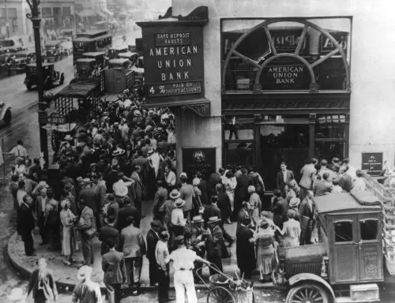
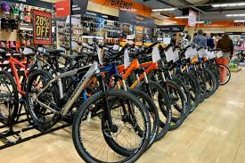

This Undergraduates Research project used a mix method approach, combining computational text analysis, data visualization,
and qualitative narrative analysis to explore gendered patterns in the relationship between socioeconomic status and education
within the Southern Life Histories.
Tech stack: R, RMarkdown, Quarto, GitHub

This project combines SQL and Tableau to analyze engagement patterns across the WNBA Youtube content. I used SQL to prepare and calculate engagement metrics.
Those results were imported into Tableau where the final dashboard highlights when fans engage most, how video length affects interaction, and which content types
generate the strongest responses. My analysis reaveals that highlight videos and short clips under three minutes consistantly generated the highest engagement rates, particularly
on Sundays and Mondays.
Tech stack: MYSQL, Excel,Tableau, GitHub
This international udergraduate research project examines how Indonesia's relocation of its capital to Ibu Kota Nusantara is transforming indigenous land rights, environmental policy, and biodiversity
in East Kalimantan. Working in collaboration with students from Universitas Mulawarman, our team conducted cross-cultural field research and GIS analysis to document the human and ecological
impacts of one of Southeast Asia's largest development projects. We found that only 45.8% of adults in the region hold legal land documentation, making indigenous communities vulnerable to eviction and unadequate
compensation. GIS habitat mapping revealed a 35 percent decline in forest connectivity since 1973, threatening keystone species such as the Bornean Orangutan and Helmeted Hornbill. This project will be pub
Tech stack: QGIS

This project presents an Excel analysis of global bike sales from 2015–2016. I cleaned and structured raw data, built pivot tables to summarize performance by category and region. This analysis revealed a total revenue of $84.8M, a total profit of $32M, and a verified 38% profit margin, indicating strong financial performance and operational efficiency. Accessories drove the highest growth with a 50% profit increase, while bikes saw a 22% decline due to rising costs. The U.S. and Australia were top-performing markets, though Australia experienced a slight downturn, while European regions like Germany and the U.K. showed stable growth. Quarterly profit margins rose from 33% to 51%, reflecting improved cost control and stronger seasonal demand. Overall, the company maintained a healthy financial position, with opportunities to expand high performing accessory lines and refine bike pricing strategies to sustain profitability.